Ovo su "front matter" (predgovori hrvatskom i engleskom izdanju, sadržaj) i "back matter" (bibliografija, indeks oznaka i indeks pojmova).
Knjiga Number Theory je dostupna u Središnjoj matematičkoj knjižnici na Matematičkom odsjeku PMF-a, te knjižnicama u Čakovcu, Dubrovniku, Osijeku, Puli, Rijeci, Splitu, Šibeniku i Zadru, Našicama, Slavonskom Brodu, Zagrebu i Zaprešiću te Koprivnici, Splitu (PMF) i Varaždinu.
Prikazi knjige Number Theory na Croatian World Network, EMS Magazine, MAA Reviews, The Mathematical Intelligencer i Zentralblatt MATH.
Govor Ivice Gusića na predstavljanju
Govor Andreja Dujelle na predstavljanju
Listalica s predstavljanja
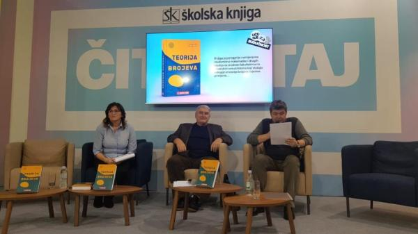
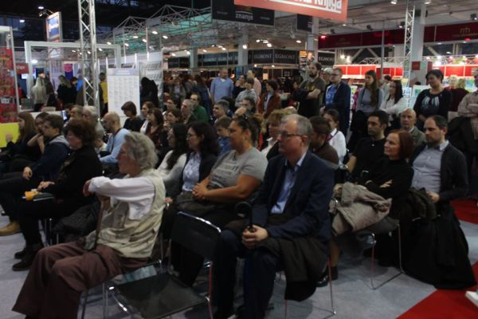
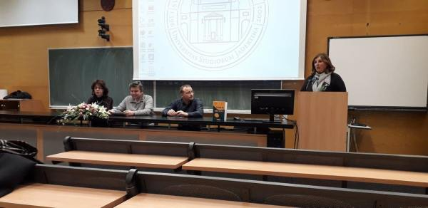
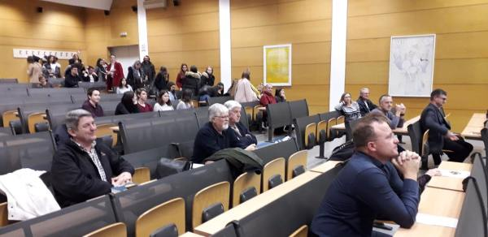
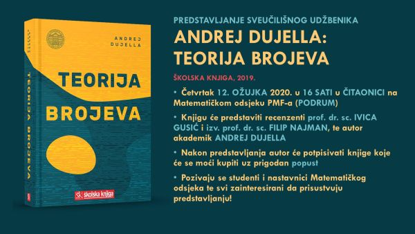
Govor Filipa Najmana na predstavljanju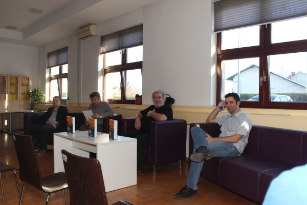
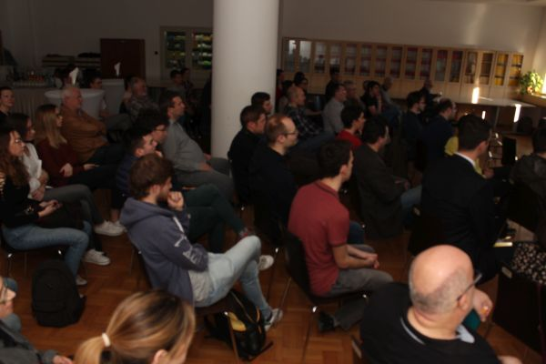
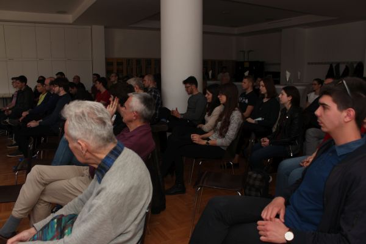
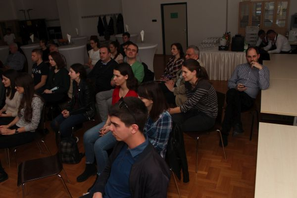
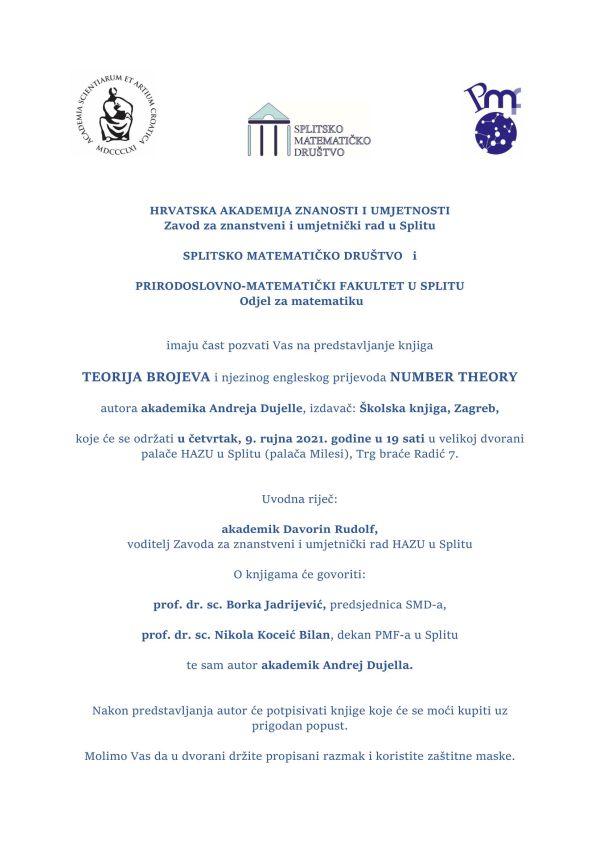
Govor Andreja Dujelle na predstavljanju
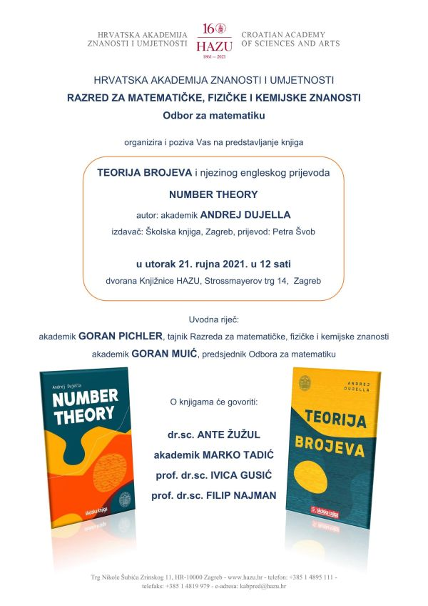
Pozdravni govor Luke Grubišića na predstavljanju 

Teorija brojeva grana je matematike koja se ponajprije bavi proučavanjem svojstava prirodnih brojeva kao što su djeljivost, rastav na proste faktore ili rješivost jednadžbi u prirodnim brojevima. Ona ima vrlo dugu i bogatu povijest, a važan su joj doprinos dali i neki od najvažnijih matematičara u povijesti poput Euklida, Eulera i Gaussa. Tijekom te duge povijesti teorija brojeva često se smatrala "najčišćom" granom matematike, u smislu da je bila najdalja od bilo kakvih konkretnih primjena. Međutim, sredinom 70-ih godina 20. stoljeća nastupa bitna promjena, tako da je danas teorija brojeva jedna od najvažnijih grana matematike za primjene u kriptografiji i sigurnoj razmjeni informacija.
Ova je knjiga nastala na osnovi nastavnih materijala iz kolegija Teorija brojeva i Elementarna teorija brojeva, koji se predaju na preddiplomskim studijima na Matematičkom odsjeku Prirodoslovno-matematičkog fakulteta Sveučilišta u Zagrebu, te kolegija Diofantske jednadžbe i Diofantske aproksimacije i primjene, koji su se predavali na doktorskom studiju matematike na istom fakultetu. Knjiga potpuno pokriva sadržaj navedenih kolegija, ali sadržava i druge povezane teme poput eliptičkih krivulja kojima su posvećena zadnja dva poglavlja u knjizi. U knjizi su obrađene i neke teme koje su bile i jesu u središtu istraživačkog interesa autora knjige i ostalih članova hrvatske grupe iz teorije brojeva okupljene oko Seminara za teoriju brojeva i algebru.
Knjiga je ponajprije namijenjena studentima matematike i srodnih fakulteta na hrvatskim sveučilištima koji slušaju kolegije iz teorije brojeva i njezinih primjena, potom naprednim srednjoškolcima koji se pripremaju za matematička natjecanja u kojima na svim razinama, od školske do međunarodne, teorija brojeva uvijek zauzima važno mjesto, te doktorskim studentima i znanstvenicima koji se bave teorijom brojeva, algebrom i kriptografijom.
Predgovor
1. Uvod
1.1. Peanovi aksiomi
1.2. Princip matematičke indukcije
1.3. Fibonaccijevi brojevi
1.4. Zadatci
2. Djeljivost
2.1. Najveći zajednički djelitelj
2.2. Euklidov algoritam
2.3. Prosti brojevi
2.4. Zadatci
3. Kongruencije
3.1. Definicija i svojstva kongruencija
3.2. Pravila za djeljivost
3.3. Linearne kongruencije
3.4. Kineski teorem o ostatcima
3.5. Reducirani sustav ostataka
3.6. Kongruencije po prostom modulu
3.7. Primitivni korijeni i indeksi
3.8. Decimalni zapis racionalnog broja
3.9. Pseudoprosti brojevi
3.10. Zadatci
4. Kvadratni ostatci
4.1. Legendreov simbol
4.2. Kvadratni zakon reciprociteta
4.3. Računanje kvaratnog korijena modulo p
4.4. Jacobijev simbol
4.5. Djeljivost Fibonaccijevih brojeva
4.6. Zadatci
5. Kvadratne forme
5.1. Sume dvaju kvadrata
5.2. Pozitivno definitne kvadratne forme
5.3. Sume četiriju kvadrata
5.4. Sume triju kvadrata
5.5. Zadatci
6. Aritmetičke funkcije
6.1. Funkcija najveće cijelo
6.2. Multiplikativne funkcije
6.3. Asimptotske ocjene za aritmetičke funkcije
6.4. Dirichletov produkt
6.5. Zadatci
7. Distribucija prostih brojeva
7.1. Elementarne ocjene za funkciju π(x)
7.2. Čebiševljeve funkcije
7.3. Riemannova zeta-funkcija
7.4. Dirichletovi karakteri
7.5. Prosti brojevi u aritmetičkom nizu
7.6. Zadatci
8. Diofantske aproksimacije
8.1. Dirichletov teorem
8.2. Fareyjevi nizovi
8.3. Verižni razlomci
8.4. Verižni razlomci i aproksimacija iracionalnih brojeva
8.5. Ekvivalentni brojevi
8.6. Periodski verižni razlomci
8.7. Newtonovi aproksimanti
8.8. Simultane aproksimacije
8.9. LLL-algoritam
8.10. Zadatci
9. Primjena diofantskih aproksimacija u kriptografiji
9.1. Vrlo kratki uvod u kriptografiju
9.2. Kriptosustav RSA
9.3. Wienerov napad na kriptosustav RSA
9.4. Napadi na RSA koji se koriste LLL-algoritmom
9.5. Coppersmithov teorem
9.6. Zadatci
10. Diofantske jednadžbe I
10.1. Linearne diofantske jednadžbe
10.2. Pitagorine trojke
10.3. Pellova jednadžba
10.4. Verižni razlomci i Pellova jednadžba
10.5. Pellovska jednadžba
10.6. Kvadrati u Fibonaccijevu nizu
10.7. Ternarne kvadratne forme
10.8. Lokalno-globalni princip
10.9. Zadatci
11. Polinomi
11.1. Djeljivost polinoma
11.2. Korijeni polinoma
11.3. Ireducibilnost polinoma
11.4. Dekompozicija polinoma
11.5. Simetrični polinomi
11.6. Zadatci
12. Algebarski brojevi
12.1. Kvadratna polja
12.2. Polja algebarskih brojeva
12.3. Algebarski cijeli brojevi
12.4. Ideali
12.5. Jedinice i klase ideala
12.6. Zadatci
13. Aproksimacija algebarskih brojeva
13.1. Liouvilleov teorem
13.2. Rothov teorem
13.3. Hipergeometrijska metoda
13.4. Aproksimacija kvadratnim iracionalnostima
13.5. Separacija korijena polinoma
13.6. Zadatci
14. Diofantske jednadžbe II
14.1. Thueova jednadžba
14.2. Tzanakisova metoda
14.3. Linearne forme u logaritmima
14.4. Baker-Davenportova redukcija
14.5. LLL-redukcija
14.6. Diofantove m-torke
14.7. Zadatci
15. Eliptičke krivulje
15.1. Uvod u eliptičke krivulje
15.2. Jednadžbe eliptičke krivulje
15.3. Torzijska grupa
15.4. Kanonska visina i Mordell-Weilov teorem
15.5. Rang eliptičkih krivulja
15.6. Konačna polja
15.7. Eliptičke krivulje nad konačnim poljima
15.8. Primjena eliptičkih krivulja u kriptografiji
15.9. Dokazivanje prostosti s pomoću eliptičkih krivulja
15.10. Faktorizacija s pomoću eliptičkih krivulja
15.11. Zadatci
16. Diofantski problemi i eliptičke krivulje
16.1. Kongruentni brojevi
16.2. Mordellova jednadžba
16.3. Primjena faktorizacije u kvadratnim poljima
16.4. Transformacija eliptičkih krivulja u Thueove jednadžbe
16.5. Algoritam za rješavanje Theove jednadžbe
16.6. abc slutnja
16.7. Diofantove m-torke i eliptičke krivulje
16.8. Zadatci
Bibliografija
Indeks oznaka
Indeks pojmova
Komentare, primjedbe i sugestije u vezi knjige možete poslati na e-mail adresu duje@math.hr. Posebno ću biti zahvalan svima koji ukažu na nedostatke ili moguće pogrješke u knjizi.
Popis korekcija i dodatnih komentara (errata et addenda)
| Web stranica kolegija Teorija brojeva | Andrej Dujella - osobna stranica |